You Only Look Once (YOLO)
一種讓電腦能夠快速地識別出一張圖片中的物體和它們的位置的技術
什麼是 YOLO？
YOLO 的全稱是 You Only Look Once，名字靈感來自流行語 "You only live once" 。它是由 Joseph Redmon 等人於 2015 年提出的電腦視覺物件偵測演算法，它是 One-Stage（單階段）物件偵測方法的先驅。
YOLO 主要解決甚麼問題
傳統的物件偵測術屬於 Two-Stage（雙階段），必須先在圖片中隨機找出幾千個「可能包含物體的候選區域」，再一個個送進 CNN 分類，這種做法非常消耗資源且速度慢，無法做到即時處理，但 YOLO 解決了「物件偵測無法兼顧高速度與即時性」的技術瓶頸。
YOLO 運作流程
當一張圖片輸入到 YOLO 網路中時，它主要執行以下三個步驟：
1 影像預處理與網格劃分
將輸入圖像統一 Resize 到 448×448 的標準尺寸，並在演算法邏輯上將影像劃分為 S × S 的網格（如 7×7），由物件中心點所在的網格負責偵測該物件。
2 單一卷積網路同時預測
執行單個卷積神經網路（CNN），僅需這一次前向傳播，網路就會同時輸出每個網格對應的多個邊界框、置信度分數（Confidence Score）以及類別條件機率。
3 閾值過濾與 NMS 後處理
基於模型輸出的信心程度，先依據閾值（Threshold）濾除背景雜訊，再透過非極大值抑制（Non-max suppression, NMS）消除重疊的冗餘邊界框，產出最終精準的偵測結果。
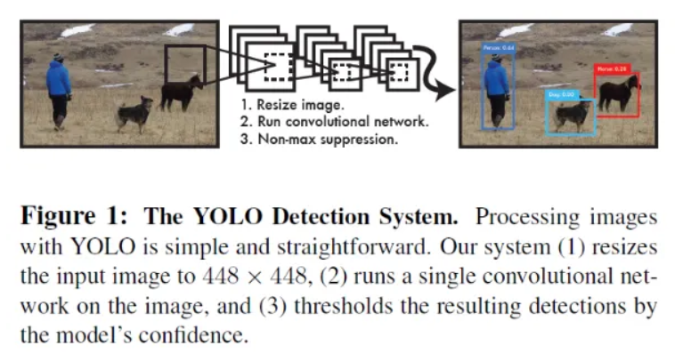
備註：在 YOLO 演算法中，置信度分數（Confidence Score，又稱信心度分數）是用來衡量「某個預測框（Bounding Box）有多大把握這裡有東西，且這個框畫得有多準」的一個數學指標，數值通常為 0 ~ 1。
🔍 點擊展開 / 收起：置信度分數核心數學公式
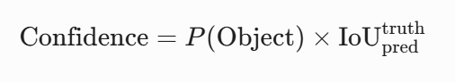
備註：在深度學習中，前向傳播（Forward Pass）是指數據自輸入層進入，一路上前推經過神經網路各隱藏層進行矩陣運算，最終在輸出層得到預測結果的單向流動過程。YOLO 的特點即是在單次前向傳播中並行輸出位置與類別機率。
常見應用
1 自動駕駛車辨識路人與車輛
在車子鏡頭中即時辨識行人、號誌及周遭車輛，確保行車安全。
2 工廠流水線即時瑕疵檢測
透過高速鏡頭自動過濾產線上的不良品，精準抓出外觀瑕疵。
3 無人機目標追蹤
鎖定特定動態地面目標進行空拍或跟隨任務。
4 球類比賽軌跡追蹤
分析球員跑位以及球類的運動路徑，提供即時的數據賽況分析。
5 智慧安防監控
在監控系統中即時偵測異常入侵者或群聚事件，落現科技防範。
優缺點分析
強大優勢
- 速度極快： 輕量化版本甚至能突破 150 FPS，適配即時監控與自動駕駛。
- 全域背景理解： YOLO 在推論時掌握整張圖的脈絡，相比局部方法，較不容易把背景雜訊誤判為物件。
- 通用能力高： 面對非原生訓練集的藝術畫作或卡通風格，依然能維持穩定的表現。
面臨挑戰
- 小物件難以捕捉： 受到網格空間特徵限制，當多個微小物體聚集在同一個鄰近網格時容易發生漏檢。
- 密集幾流重疊： 面對長寬比變化極大、高度重疊或極為密集的物件，部分輕量化模型定位精度受限。
YOLO 演進
以下是 YOLO 歷史上前七代的核心發展歷程：
YOLOv1 (2015)
開創性的第一代，第一次將物件偵測轉化為「單一迴歸問題」，放棄了複雜的候選區域，速度非常快，直接奠定了一階段物件偵測的框架。
💡 核心突破：End-to-End 單次推論YOLOv2 / 9000 (2016)
引入了 Anchor Box（錨定框）機制並加入 Batch Normalization，大幅改善定位精準度，YOLO9000 版本更能同時識別高達 9000 種物體。
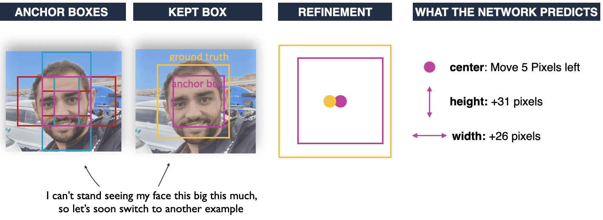
YOLOv3 (2018)
原作者最後一個版本，採用 Darknet-53 架構，最大的亮點是引入「多尺度預測」（類似特徵金字塔），徹底補齊了過往對小物件偵測能力不足的致命短板。
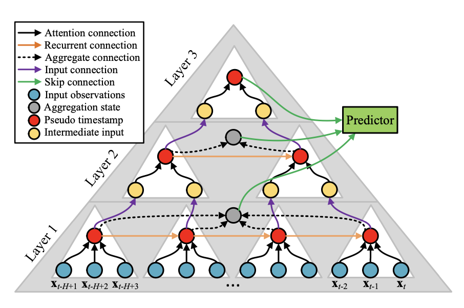
YOLOv4 (2020)
接續原作者之作，集合了當時深度學習領域中各式各樣的優化技巧（如 Mosaic 資料增強、Mish 激活函數等），在完全不犧牲速度的情況下，疊加準確度。
💡 核心突破：Bag of Freebies / 特徵融合YOLOv5 (2020)
工程部署與生態的重大改變，拋棄了以往底層的 C 語言 Darknet，改用純 PyTorch 開發，其上手難度低、完善的部署工具，使其成為業界的主力。
💡 核心突破：PyTorch 部署生態 / 自適應錨框YOLOv6 (2022)
針對工業端進行的硬體優化版本，特別為邊緣運算裝置、嵌入式硬體重構主幹網路，旨在達成極致的推論速度與高硬體吞吐量。
💡 核心突破：重參數化 (RepVGG) / 工業優化YOLOv7 (2022)
由台灣中研院團隊主導研發，提出了擴展高效層聚合網路（E-ELAN）和基於卷積的重參數化模型，在速度與準確度平衡上創下了帕累托最優（當時世界第一）。
💡 核心突破：E-ELAN 架構 / 模型縮放策略備註：帕累托最優：指資源分配的一種理想狀態：在無法使任何人境況變壞的前提下，也無法讓任何人的處境變得更好。此時的資源分配已經達到極致，沒有再改進的空間。
AI 輔助學習紀錄
📌 問題一
💡 我問了 AI 什麼問題？
📝 AI 的回答
AI先是介紹了YOLO的出現原因跟命名巧思，接著介紹了核心運作流程，提到了網格劃分、邊框預測與置信度、類別機率預測、非極大值抑制，最後還補充了YOLO的優缺點分析、歷史演進，讓我對這個演算法有了更全面的理解。
🖼️ 點擊展開 / 收起：回答截圖 (1/4)
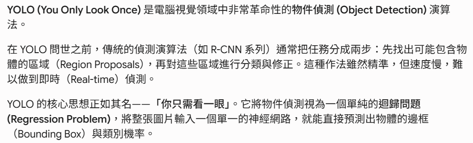
🖼️ 點擊展開 / 收起：回答截圖 (2/4)
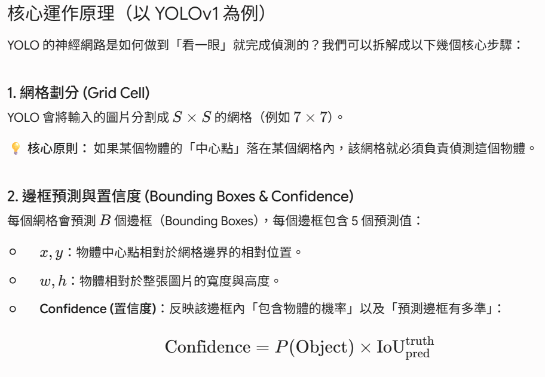
🖼️ 點擊展開 / 收起：回答截圖 (3/4)
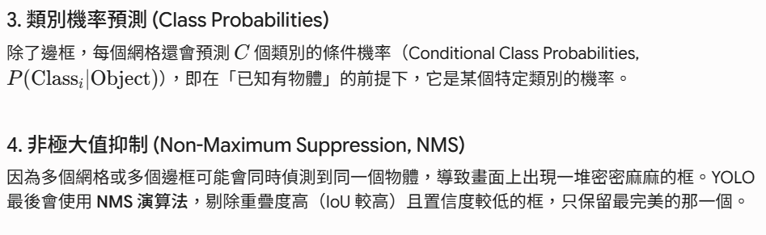
🖼️ 點擊展開 / 收起：回答截圖 (4/4)
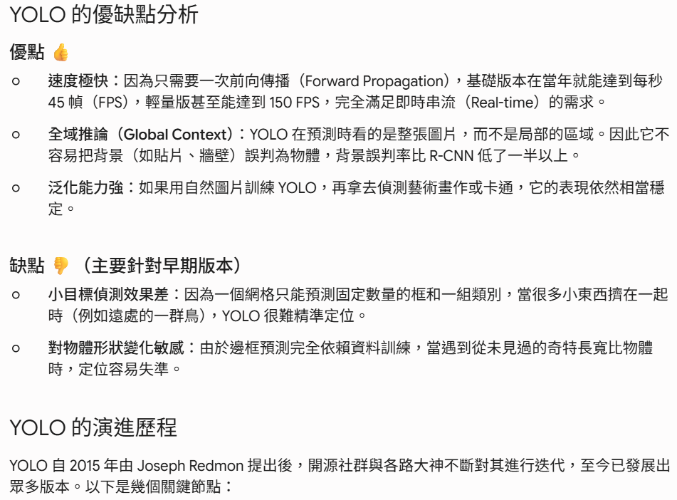
📌 問題二
💡 我問了 AI 什麼問題？
我對問題一裡提到的前向傳播不是很能理解，應該說完全不知道它是什麼意思，因此針對此問題，我再次詢問AI。
📝 AI 的回答
AI先是介紹了叫做前向傳播的原因，再將前向傳播的步驟詳細說明。
🖼️ 點擊展開 / 收起：回答截圖 (1/4)
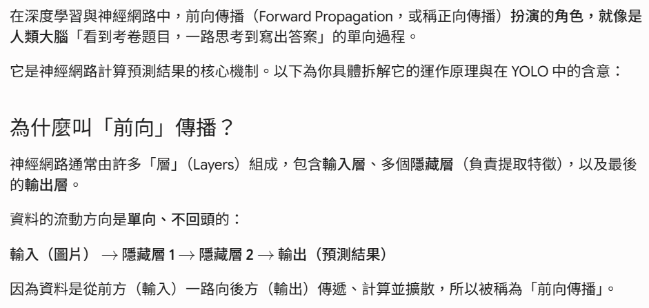
🖼️ 點擊展開 / 收起：回答截圖 (2/4)
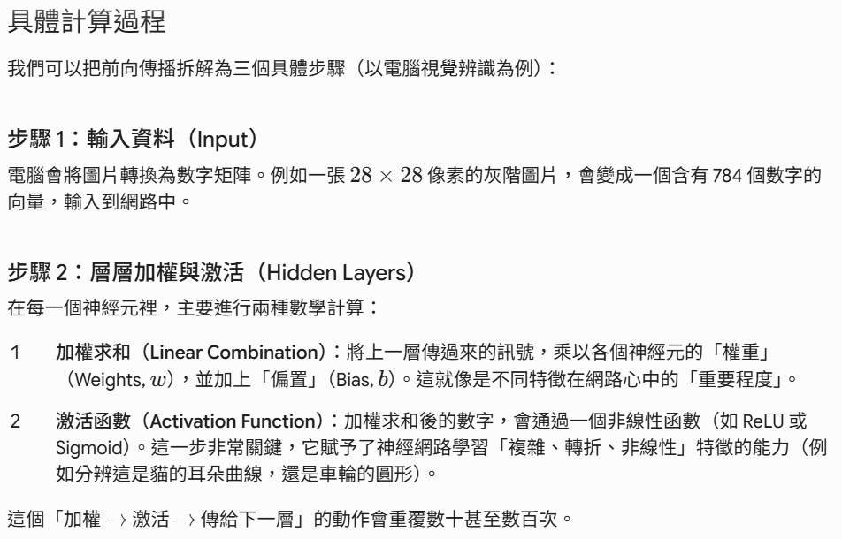
🖼️ 點擊展開 / 收起：回答截圖 (3/4)
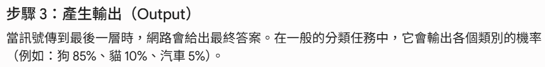
🖼️ 點擊展開 / 收起：回答截圖 (4/4)
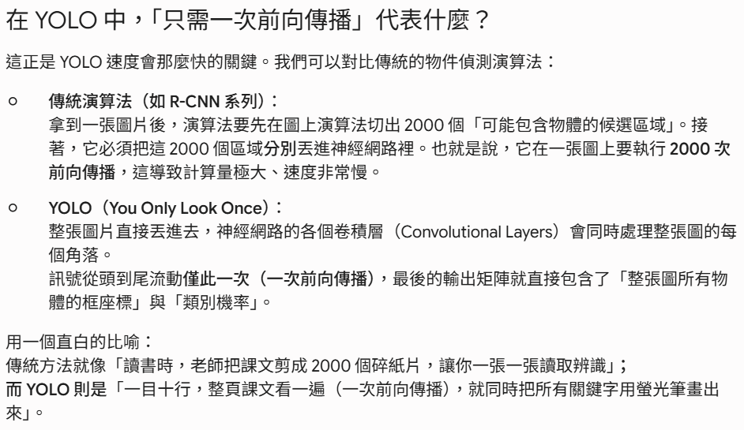
📌 問題三
💡 我問了 AI 什麼問題？
因為我想要生成一個厲害的YOLO流程圖，網路上的都千篇一律，所以我向AI尋求協助，請他幫我設計一個prompt來生成厲害的流程圖。
📝 AI 的回答
🖼️ 點擊展開 / 收起：Prompt 設計截圖
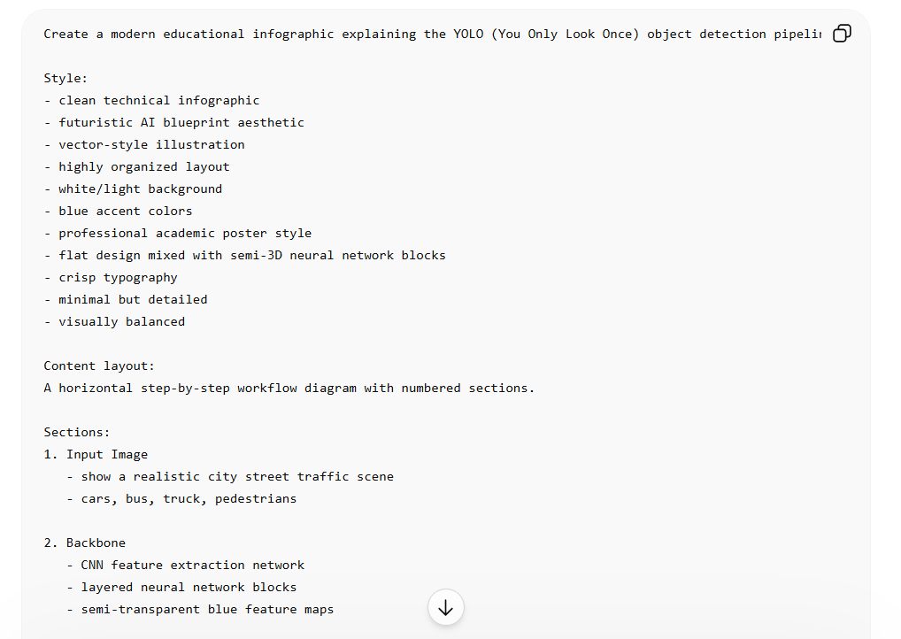
查證與修正
我擔心我用 AI 生成的流程圖可能有誤，因此需要進行查證與修正。
🔍 如何確認是否正確
我採用比較有趣的方法，一開始我先用Gemini的Nano Banana生成一張流程圖，但Gemini生成的流程圖雖然很酷，但內容比較簡陋，我就將圖放到ChatGPT上詢問他這個圖片是否有誤，ChatGPT說此圖是YOLO很早期的流程，所以我請ChatGPT幫我生成一張更精確的流程圖，我再把這邊生成的流程圖丟到Gemini上評價，Gemini說這張圖已經很完整，然後我再自己重新看過這張圖，配上網路上別人分享的資訊確認是否正確。
🔄 修正前後對比
🖼️ 點擊展開 / 收起：修正前(Gemini)
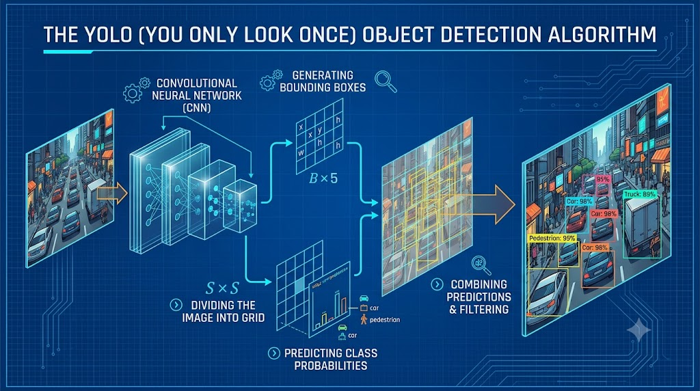
🖼️ 點擊展開 / 收起：修正後(ChatGPT)
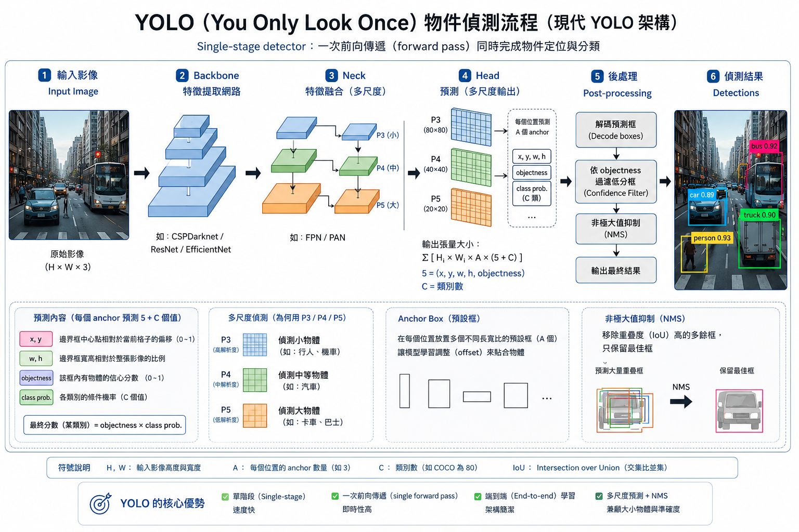
視覺化說明
應用實例
- 起源：由義隆電子提出希望研發出一個系統，可以直接在路口的邊緣裝置上進行高效運算，達到「低延遲、低功耗、高準確」的動態號誌控制，後由中研院資訊所所長廖弘源、博士後研究員王建堯團隊接下，
- 技術創新：中研院團隊最初使用當時最強的物件偵測演算法YOLOv3，但王建堯博士跳脫傳統框架，研發出 CSPNet（跨階段局部網路），CSPNet 的核心思想是「資料分流」，它將特徵圖（Feature Maps）分成兩部分，一部分經過複雜運算，另一部分直接傳到後面結合，這樣做大幅減少了重複的梯度計算，不僅讓運算速度倍增，甚至因為保留了多樣化的特徵，精準度反而提升。
- 部署地點：新竹科學園區的第一個路口（園區交通要道），以及桃園、新竹等地的多處重要路口。
- 動態號誌調控：系統在路側直接運算出每 5 分鐘、每小時的動態車流圖表與趨勢預測，交通控制系統會根據這些即時數據，自動微調尖峰時段的紅綠燈秒數。
🎥 應用展示影片：中研院車流即時分析
學習反思
💡 對個人學習的實質幫助
AI對於學習我個人認為最大的幫助真的是快速，在時間有限的情況下，它能快速地幫你整理資料、寫prompt、製作網頁，在學習這個方面真的幫助很大，尤其像是我們現在這種程度，可能還不需要問到一些很高深的問題，AI基本上都能夠給出與事實相符率非常高的回答，雖然有時候會有一些偏差，但整體來說我覺得還是很有幫助。
第二個優點是，它可以幫我做出很好看的網頁，而且只要一個指令我就可以複製貼上，快速的很，雖然有時候溝通會有點障礙，但我依然認為優點大於缺點。
⚠️ 與 AI 協作的缺點與限制
AI的協作的缺點在於，他的資料並不會完全正確，有時候會出現錯誤，所以當我們在使用AI學習或整理資料的時候應該要更加小心，多多查證與檢查，這樣才不會導致錯誤的發生。
除了資訊錯誤之外，另一個缺點是AI可能無法完全理解你內心希望他做到的事情，網頁上所有出現的東西都是我自己想的，包括導航欄還有Footer跟風格，但AI還真的不一定可以理解我想要我的網頁長怎樣，所以溝通了好久，但若是改變不了AI，那我們可以做到的事情就是增強自己寫prompt的能力，未來一定還有更多機會接觸AI，藉由此次機會增進自己對AI的溝通能力，我覺得是非常值得的一件事。
🧠 學會了什麼?
YOLO這個演算法比我想像的還要有趣，發現現實生活中其實有很多東西都用到YOLO，除了上面說到的車流即時分析外，還有看到關於採果使用YOLO的技術，以及球類運動的好壞球偵測。
我藉著這次期末報告還學會了一些專有名詞，像是置信度分數、前向傳播、帕累托最優……，也讓我學會了如何用前端來包裝一個複雜的 AI 技術主題，知道要讓網頁好看還真不是一個簡單的事情。
心得
一開始我做這個網頁很沒有頭緒，雖然老師都有提示要放甚麼東西上來，但當我真的看完YOLO的相關資料後，我覺得我不知道該把什麼內容放到哪個部份，因為每個參考資料的說法都很不一樣，所以我也有請AI幫我整理，但越做越後面就越來越上手，也開始覺得好玩了，所以我很感謝這次的作業，讓我收穫滿滿。